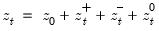
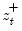
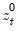

|
|
|
given a initial value
as  where ,
, and  are the partial sum processes of the differences for positive, negative, and zero changes in
relative to the threshold y:
 .
.  argument specifies the threshold value. By default
argument specifies the threshold value. By default  .
.